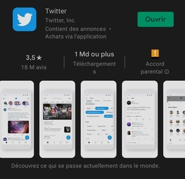
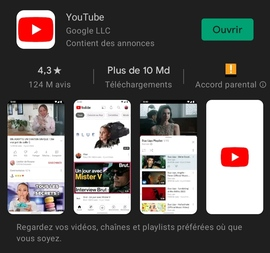
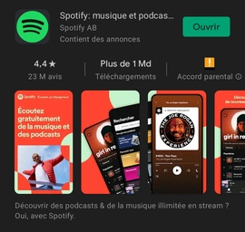

Bienvenue sur AppsEye, on analyse ensemble l’actualité des applications mobiles et des jeux !
Chaque semaine, le site se met à jour pour vous livrer trois nouvelles pages sur un sujet précis dans le thème des applications mobiles.
Cette semaine
La semaine dernière nous avons vu les jeux les plus populaires du moment et cette semaine, à la demande de nos lecteurs, je vais vous parler de mes applications mobiles favorites, pourquoi je les apprécie, quels sont leurs points forts et leurs points faibles.
Voici les trois applications que je vais vous présenter cette semaine:
Youtube
Spotify


